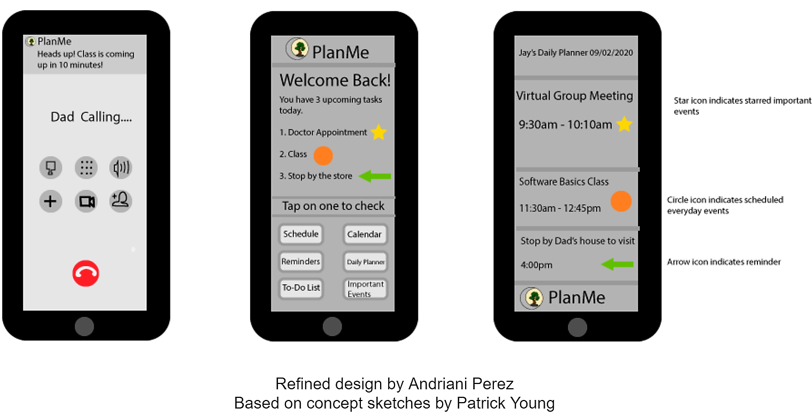

Problem Statement: Daily Planner
Students struggle to plan out their daily schedule in a way that integrates their homework, classes and other activities, resulting in a more organized week which allows for greater productivity.
Affinity Diagram: Daily Planner
Together, my team and I collaborated to compile all of the ideas we had for important aspects of our daily planner.
Persona: Jay Anderson

A persona of an average person in need of a daily planner app.
Storyboard: Jay Anderson

A brief comic detailing the usefullness of a daily planner app.
Sketches: PlanMe App
An assortment of concept sketches illustrating multiple potential solutions for our daily planner.
Paper Prototype: PlanMe App
A prototype using paper representations of app features to demonstrate the functionality of PlanMe.
Usability Test Script: PlanMe App
Two people were asked to test different aspects of the PlanMe App and provide feedback on what they liked and what they would change about PlanMe.
Low-Fi Prototype: PlanMe App
A low-fidelity digital prototype of the the PlanMe app and its functions.
Low-Fi Prototype: PlanMe App
A high-fidelity digital prototype detailing how the PlanMe app looks and functions.